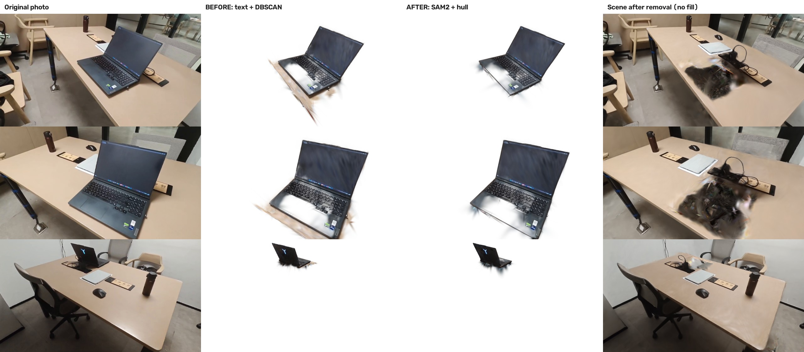
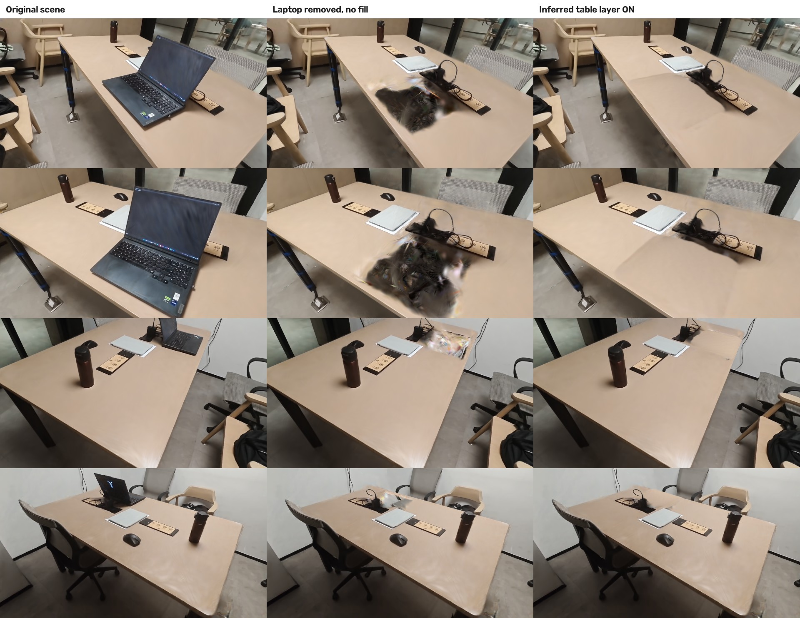

Laptop selection across held-out views
Each row shows the photograph, text-and-cluster baseline, multiview selection and scene after removal.

Background after removal
The last column uses an inferred tabletop. About 98.5% of the footprint was unobserved. The model extrapolates nearby surface colors. Some seams and palm-rest holes remain.

Agreement with propagated masks
| Metric | Baseline | Multiview |
|---|
| IoU | 0.734 | 0.811 |
| Capture | 0.784 | 0.844 |
| Coverage | 0.892 | 0.900 |
| Off-mask weight | 0.217 | 0.132 |
These comparisons use ten held-out frames and SAM 2 masks. Human ground truth was unavailable.